Datasets
To create these maps we will be using the following datasets:
American Community Survey - Table B99185 (Allocation of Ambulatory Difficulty for the Civilian Noninstitutionalized Population 5 Years and Over). Download from the U.S. Census Bureau FactFinder site.
American Community Survey - Table S0101 (AGE AND SEX). Download from the U.S. Census Bureau FactFinder site.
Census Tracts - New York State 2017 census tracts. Download from U.S. Census Bureau - Tiger/Line Shapefiles. Select
2017andCensus Tracts, and clickSubmit. Then, selectNew Yorkas the state and clickDownload.Boroughs - New York City boroughs. Download from NYC Planning - Open Data. Choose "Borough Boundaries (Clipped to Shoreline)", under "Borough Boundaries & Community Districts".
Hydrography - New York City hydrography. Download from NYC Open Data. Once you get to the NYC OpenData page, click
Exportand choose theShapefileformat.NTAs - New York City's neighborhood tabulation areas. Download from NYC Planning - Open Data. These are not the traditional NYC neighborhoods. These areas "were created to project populations at a small area level, from 2000 to 2030 for PlaNYC, the long-term sustainability plan for New York City... This criterion resulted in combinations of neighborhoods that probably would not occur if one were solely designating boundaries of historical neighborhoods. Moreover, the neighborhood names associated with the neighborhood tabulation areas are not intended to be definitive." Once you get to the NYC Planning Open Data page, download the
shapefileformat.United States Hydrographic Polygons. Download from the Columbia University Libraries Geodata portal. Download the
Original Shapefile.United States State Boundaries. Download from the U.S. Department of Transportation. Download the
Shapefile.
A packaged file with the census and block group data can be found here.
About the Census
For the U.S. census data is used as a key dataset in understanding the health and progress of our society. It provides metrics about our society and is used to normalize other data for identifying and measuring issues in our economy, environment, and society. This tutorial will explain the proper method for querying and downloading census data; preparing the data for QGIS; and joining, analyzing, and styling the data.
For reference, the U.S. Census has two main surveys, the Decennial Census and the American Community Survey. The Decennial Census is the major census survey, which is carried out every 10 years and attemps to count every person in the country. It has two major disadvantages: one, it only happens every 10 years, so for the years in between the last census might be too outdated and the next one too far away; and two, because it is not using any sampling techniques, it often under-represents minorities.
The second main survey is called the American Community Survey (ACS) and happens continuously. Its questionnaire is sent to 295,000 addresses monthly and it gathers data on topics such as ancestry, educational attainment, income, language proficiency, migration, disability, employment, and housing characteristics. Its results come in 3 forms: 1-year estimates, 3-year estimates and 5-year estimates. The 1-year estimates are the most current but the least reliable. On the contrary, the 5-year estimates are not as current but are much more reliable. F
Downloading Census Data
The first step will be to download the 'empty' geography files for our unit of analysis (by 'empty' we mean without any census attributes, apart from unique identifiers). However, before doing this we should actually decide what unit of analysis we will use.
The American Community Survey, which is the statistical survey we will be using, provides data at multiple geographic levels, all the way from the whole country to the block group (which in Manhattan can be anywhere between 1 and 4 city blocks). Some of the other geographic units of analysis include regions, states, counties and metropolitan statistical areas. However, not all the data comes at every geographical level, so in general, we will try to find the smallest unit of analysis available for our dataset. In our case, that will be the census tract level.
Because our data is available at the census tract level, we will download TIGER/Line Shapefiles for that geographical level. Download at U.S. Census Bureau - Tiger/Line Shapefiles. Select 2017 and Census Tracts, and click Submit. Then, select New York as the state and click Download.
Now we will fetch our data for analysis. Since we will be building a map displaying the number of people with ambulatory difficulties (including the number of people younger than 5 years), we will need to find two datasets, both at the census tract level: one that has age and population, and another, with the number of people with ambulatory difficulties. We will need to download this for all New York City counties.
Once you are on the American FactFinder website, click on the
ADVANCED SEARCHtab. Here we will search for the data at multiple levels:For the
Agedataset use the following cirteria:Geography: census tracts (140) for New York City counties. As a reminder, the official names of New York City counties are
Bronx,Kings,New York,Queens, andRichmond.Dataset: Under
Topicschoose the2017 ACS 5-year estimatesdataset.Topic: Also under
TopicschoosePeople/Age & Sex/Age.This set of criteria will quickly produce the
Age and Sexdataset (S0101), which we will download and alter prior to importing into QGIS. Your final filter should should look like this:
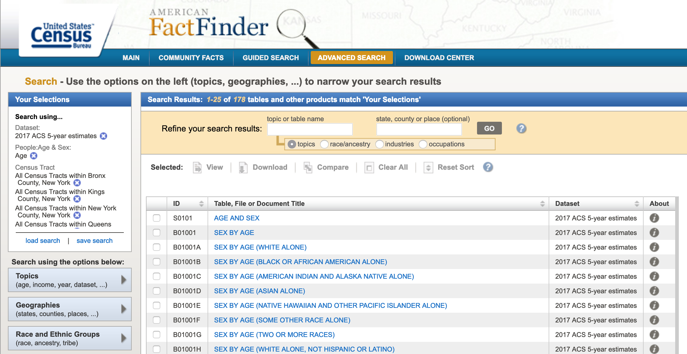
Once you get the list of datasets, open the
Age and Sextable.You will notice that each row is an age category and every column is a census tract. In order to bring this data in to QGIS we need to transpose colunns and rows. Click on the
Modify Tablebutton and then click onTranspose Rows/Columns.Finally, click
Downloadand chooseUse the dataand uncheckMerge annotations and data into a single file.Click
Ok, wait for your data to be prepared and download it.For the
People with ambulatory difficultiesdataset use the following criteria:Geography: census tracts (140) for New York City counties. As a reminder, the official names of New York City counties are
Bronx,Kings,New York,Queens, andRichmond.Dataset: Under
Topicschoose the2017 ACS 5-year estimatesdataset.Topic: Also under
TopicschoosePeople/Disability/Mobility.This set of criteria will quickly produce the
ALLOCATION OF AMBULATORY DIFFICULTY FOR THE CIVILIAN NONINSTITUTIONALIZED POPULATION 5 YEARS AND OVERdataset (B99185). Go through the same process of opening the table, transposing rows and columns, and downloading it.
Prepping Census Data for QGIS
In order to bring this census data into QGIS we need to re-format the tables, so that they are correctly read by the program and we can join them to their geographic boundaries. This is a two step process: first, we will format the actual tables in Excel, Google Spreadsheet or a simple text editor and, second, we will create two .csvt files (one for each table), which will tell QGIS the exact format for each of the fields in the tables.
Again, as with many things GIS, there are multiple ways of formatting the data. In our case we could do it using Excel, Google Documents (Spreadsheet) or even a simple text editor. Here, though, we will show you how to do it through Excel. If you know how to do it in Excel you should be able to figure out how to re-format the data using a Google Docs Spreadsheet.
The great advantage of using Excel (or Google Docs) is that if you need to, you can add and calculate new fields into your data (you can also do this in QGIS). However, if you were to do that in a text editor, you would need to manually calculate the value for every single row. On the other hand, doing the re-formating through a simple text editor means that you can control the format of the data much more and that you won't have any problems with Excel auto-converting your data into other types, for example, from text into numbers or vice versa.
Another great advantage of using Excel or Google Docs is that if you need to delete multiple fields (for example, all the margin of error fields), you can easily do it. Doing it in the text editor would be a nightmare. That being said, there are options, when downloading the data from American FactFinder, to not get the margin of error fields.
Re-formating data in Excel:
First, open a new file in Excel.
Once you've opened it, click on
File,Open...and navigate to the folder where you saved your downloaded census tables.Make sure you are able to open
All Filesnot justAll Readable Files. In my Mac, that option is calledEnableand in Windows you should select the optionAll Files (*.*)instead ofAll Excel Files (...).Once you've done this you will be able to select the file called 'ACS_17_5YR_S0101.csv' and open it. It should look something like this:
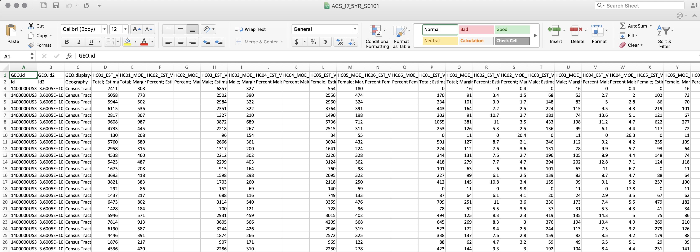
Now we need to do two things: One, rename the field names (header) and get rid of the second row, which is also a kind of header. And two, delete all fields we won't be using.
QGIS is particular about field names, so to avoid problems limit your titles to maximum 8 characters, no spaces, no weird characters and start with a letter, not a number.
First, delete all the fields we won't be using. Only keep the following ones:
GEO.id
GEO.id2
GEO.display-label
HC01_EST_VC01 (Total; Estimate; Total population Total;)
HC01_EST_VC03 (Estimate; AGE - Under 5 years)
Now, rename the fields in the following way:
GeoID
GeoID2
GeoDisp
TotPop
PopUdr5
The names don't necessarily need to be like these ones. There's no standard way of naming these fields. The only thing we would recommend is to name them as close as possible to something you can actually read, so that you and the other people who use these files can easily understand what they mean. In the end, that is what metadata is there for, to tell you exactly what each of the fields means.
Once you've renamed the fields, delete the second row. Now you are left with only one header field and the actual data.
Finally, save your file as a .csv file. If you are on a Mac, make sure you save your file as
Windows Comma Separated (.csv). Often there is a problem with the line endings when you save it as the default .csv format. Name your fileS0101.csv. It looks like the following:
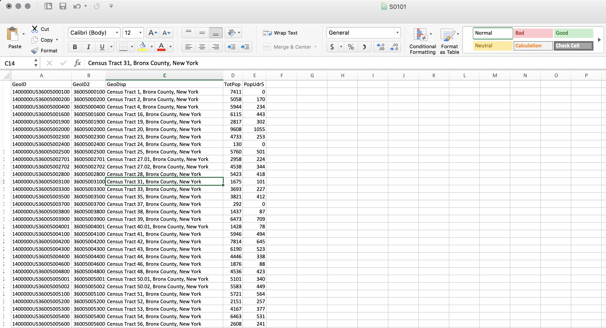
Do the same thing for the second table: Open it in Excel and delete all the columns except for
GEO.id,GEO.id2,GEO.display-label,HD01_VD02(Estimate; Total: - Allocated).Rename the fields in the following manner:
GeoID
GeoID2
GeoDisp
TotDiff
Delete the second row, the one with the descriptions. And save it (as a
Windows Comma Separated .csv) asB99185.csv
Creating the .csvt file:
After exporting your CSV, you will need to create a .csvt file. This file will tell QGIS exactly what type of data each of the fields is in. The different types of data your fields can take are:
String - Represents text
Integer - Represents whole numbers
Real - Represents both negative and positive numbers, with decimal points
Date - Date in the format YYYY-MM-DD
Time - Time in the format HH:MM:SS+nn
DateTime - Date and time in the format YYYY-MM-DD HH:MM:SS+nn
So, for every column we need to specify what type the data is in.
In your text editor, open a new file.
For every field, write the type of data it takes in quotation marks:
For the first file (S0101.csv) write
"String","String","String","Integer","Integer". Note that every item is separated by a comma and that the first three fields, even though they seem like they are numbers, are actually text fields. This is very important, since we are going to use those fields to join our census table to the census boundaries, which also contain those fields as text. If we have one file with text and another with integers or real numbers, the program won't be able to match it.If you are working on Mac's TextEdit you need to format your file as 'Plain Text'. To do this click on
Formatand thenMake Plain Text. This will change your file from an .rtf to a simple .txt.Save your file with the same name as the table but with a different extension. It is important to do this so that QGIS understands that this .csvt file corresponds to the other .csv or .txt file. In both Windows Notepad and in Mac TextEdit you need to manually type the extension (.csvt) and in TextEdit you need to un-check the option that says 'If no extension is provided, use .txt'.
The first file should be save as
S0101.csvt.Go through the same process for the second file (B99185.csv): Open a new file in your text editor, write
"String","String","String","Integer". And save it asB99185.csvt.Your final file should look something like this:
Now that the files are ready we can move into QGIS and bring everything together. A packaged version of these csv/csvt can be found here.
Importing Data to QGIS
First, open a new map in QGIS and add the following layers (links at the beginning of this tutorial). Remember to add the boroughs first so that the map takes on the right projection.
Boroughs
Census Tracts
Organize your layers so that the Census Tracts are on top of the boroughs.
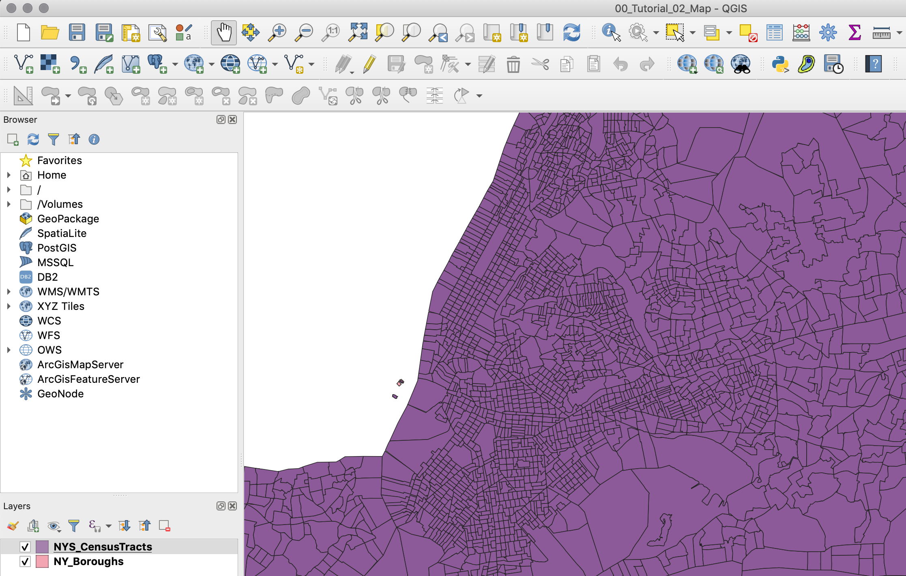
Next, import your cleaned ACS datasets. To do so, click on
Add Deliminated Tex Layer(Represented by a comma icon with a plus sign).In the menu that comes up, look for your .csv (S0101) file. Once you've selected your file QGIS will automatically select some presets. You should have the following options selected:
File format:
CSV (comma separated values)- this is the format our data is in: each value is separated by a comma.Record and Fields options:
Number of header lines to discard:
0First record has field names: checked.Detect field types: checked.Geometry definition:
No Geometry (attribute only table)- our data does not have any geometry data: no coordinates or WKT ("well known text representation of geometry") data.Your menu should look something like this:
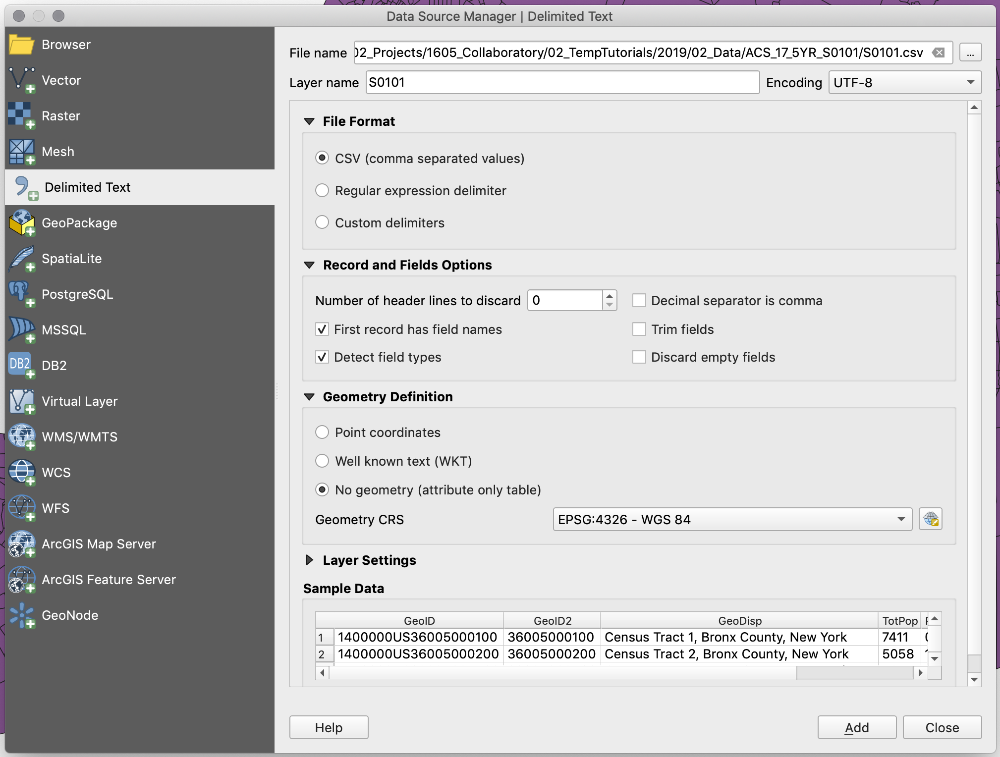
Add the data. Your table should appear in the layers panel, and if you right-click on it and open its attribute table you should see your data more or less how it was in Excel.
Do the same for the second .csv file (B99185) and make sure that at then you can also see this one correctly.
Now that we have our layers loaded, we need to join our census datasets to the census tracts geometry:
First, right click on your
Census Tractslayer and selectProperties, and on the left column, select theJoinstab.Next, click the
+sign and a prompt will appear.Now, select
S0101as the join layer, andGeoID2as the join field.Next, select
GEOIDas the target field. Make sure both the join field and the target field are of the same type. In this case, both of them should sayabcbefore their names. This means they are both text fields.Next, check the
Joined Fieldsbox and selectTotPopandPopUdr5. This way, we will only join those two fields.Finally, check the
Custom Field Name Prefixbox and get rid of the text there. This will make sure the new fields don't have any prefix in their titles (you would leave this on if, for example, you wanted to maitain a record of where the fields are coming from).Your join menu should look like this:
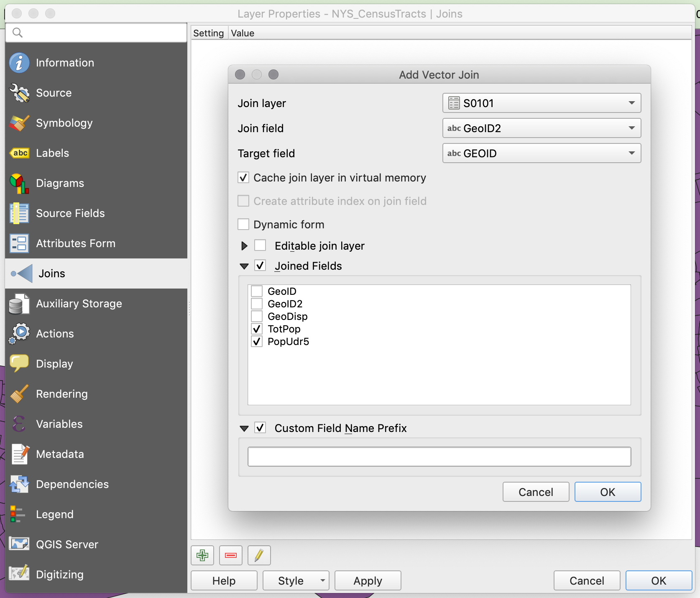
Hit
OKandOKto close the properties panel.After joining any dataset, the first thing you should do is check the attribute table of the recipient dataset (Census Tracts) and make sure you see the new columns.
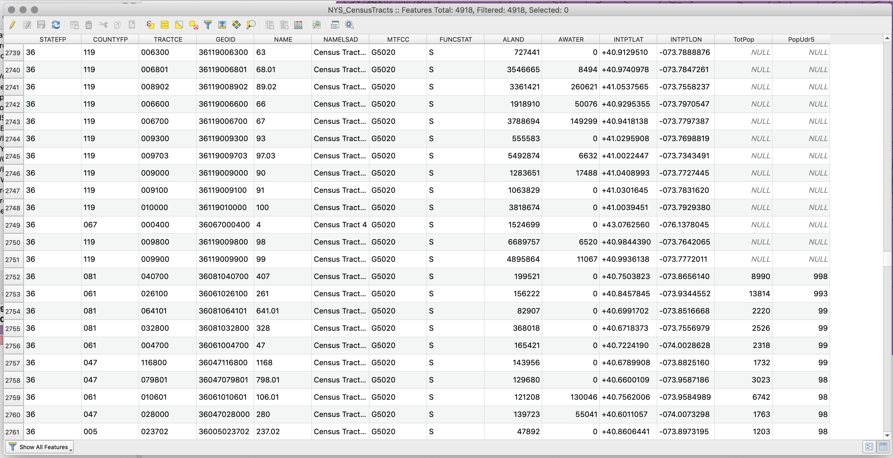
The join was successful, but in looking at the attribute table, we see that some of the rows in the census tracts file have
NULLvalues. This is because the geometry file includes all the census tracts in New York State, while our csv file has only data for the census tracts in New York City.Before we filter out the census tracts outside of New York City, go ahead and, using the same process, join the other csv (B99185) to the census tracts file (join the
TotDifffield). Once you join it, double check that the join worked.To filter out the census tracts located outside of New York City we will write a selection query that picks only the census tracts whose county code (
COUNTYFP) matches those of New York City. Then, we will export these selected census tracts as a new file, and in the process, give that file the standard New York City geographic projection:In the attribute table of the census tract file click on the
Select features using an expressionbutton (the one with an "ε" over a yellow square).Once in there write the following expression:
"COUNTYFP" = '005' OR "COUNTYFP" = '047' OR "COUNTYFP" = '061' OR "COUNTYFP" = '081' OR "COUNTYFP" = '085'and clickSelect features. In the top of the attribute table behind the selection panel you will see that it now says there are 2167 features selected.
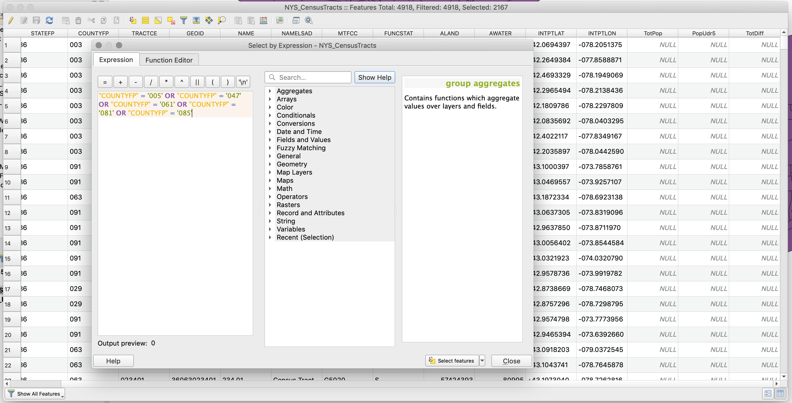
Click
Closeand close also the attribute table. In the map you should see all the census tracts for New York City highlighted in yellow while the ones for the rest of the state remain in their original color.Finally, right-click on the census tract layer and select
Export,Save Selected Features As....In the following menu choose:
Format:
ESRI Shapefile- this is the same format of our other layers.Save as: choose the appropriate location and name for your file.
CRS:
EPSG:102718 - NAD 83 / New York Long Island (ftUS)- this is the coordinate system we are working with and we want this layer to have the same one.Check
Save only selected features.Check
Add saved file to map- so that once you export the layer, the layer is added to your map.
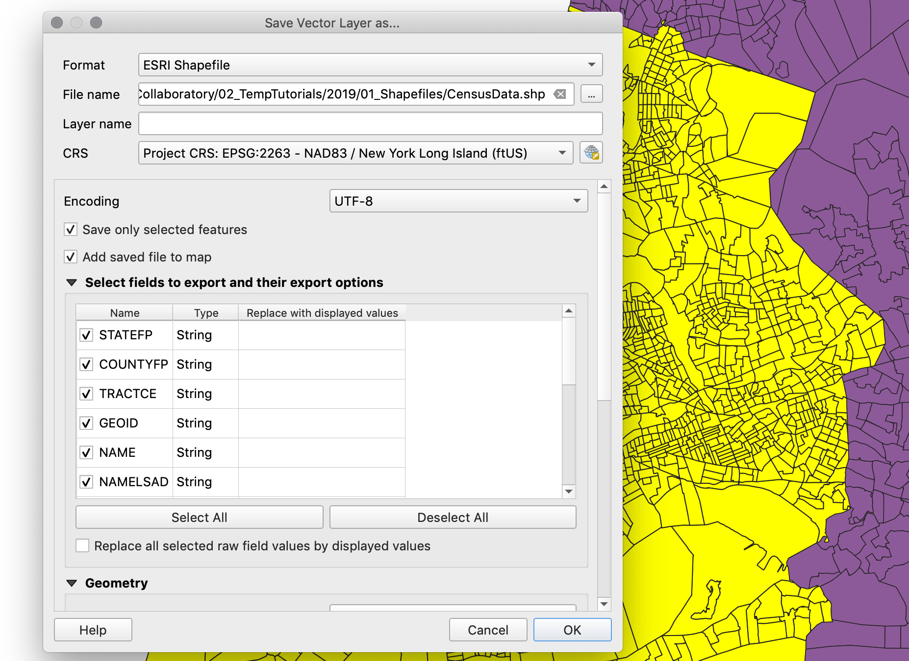
Once you export your layer, and it's automatically added to your map, you can open its attribute table to check that it has all the right fields. Finally, right-click on the original census tract layer and on the two csv files that we imported and remove them from the map.
Now, we are ready to process, symbolize, and visualize our data.
Processing Data
If we were to create a map of the total number of people with ambulatory difficulties or the total number of people aged less than five, we could just go ahead and symbolize the layer based on those fields. However, since census tracts often have different sizes and different number of people, it is much more accurate to represent the percentage of people that fall into those categories. For this reason, before we symbolize we will first create three new fields: one for the percentage of people with ambulatory difficulties, one for the percentage of people aged less than 5, and one for the combined percentage of people that fall in either one of these categories.
To create new fields in a layer open its attribute table and click on the
Open field calculatorbutton (the one that has an abacus).First we will create the percentage of people with ambulatory difficulties field. In the menu that appears set the
Output field nameto "PerAmbDiff".Set the
Output field typetoDecimal number (real). Since we will calculate a percentage, which will go from 0 to 1, we need the field to have decimal numbers.Precisionstands for how many digits after the dot we will have. 3 should be fine for our numbers.And in the expression panel type
"TotDiff" / "TotPop". This is what the actual calculation will be.
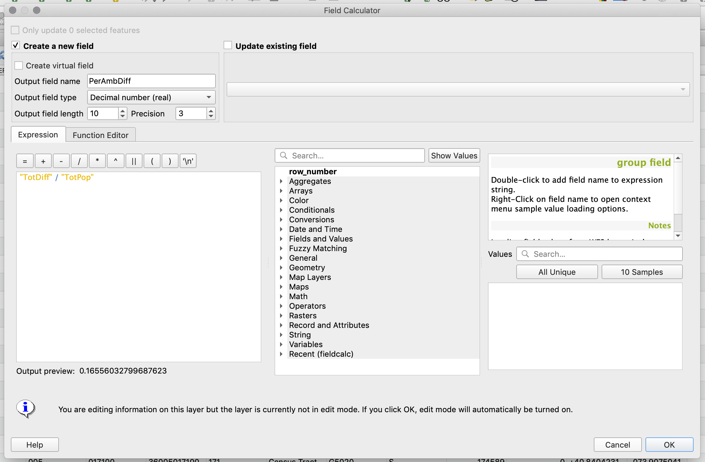
Click
OKand in the attribute table you should now see the new field with appropriate values.In a similar way calculate the percentage of people aged less than 5 (
"PopUdr5" / "TotPop") and the combined percentage of people that fall in either of those categories (("PopUdr5" + "TotDiff" ) / "TotPop").Finally, if you look at the top-left corner of the attribute table you will notice that the button with the pencil icon is active (
Toggle editing mode). This means that we are actively editing the layer. This happens automatically when you create a new field but it's important to "close" this editing session and save your edits. To do this just click that button again and confirm you want toSavethe changes to your layer.
Styling the Maps
Now that you have all the data in the census tract layer you can symbolize and create the final maps. For a more detailed description on how to work with symbologies take a look at this tutorial.
First, let's create a map showing the percentage of peole with ambulatory difficulties per census tract.
Go into the census tract layer attributes and select the
Symbologytab.There, choose
GraduatedandPerAmbDiffas the column to symbolize.Since we are dealing with percentages I will choose a custom classification method and divide the data as follows: 0%-10%, 10%-20%, 20%-30%, 30%-40%, 40%-50% and 50% to max. You will notice that you need to add a class. Do this with the
Classesoption at the bottom right.However, to make the values go from 0 to 100, instead of from 0 to 1, I will multiply everything by 100 in the
Columnfield. This way, the column field will readPerAmbDiff * 100.In addition, to get the legend to show with percentage signs, add a "%" sign after the "1" and "2" in the
Legend formatfield. It should read%1% - %2%.
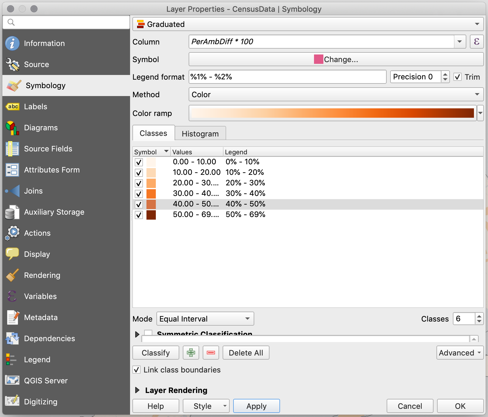
Now that the main layer has been styled, let's add the two water layers and the U.S. state boundaries layer to make the map more legible. Go ahead and add the
Hydrography of New York City, theHydrography of the US, and theU.S. State Boundaries.Put the water layers on top of everrything else and the states at the bottom.
Once you add these layers you will notice that the US Hydrography layer actually includes islands and thus Manhattan, Long Island, and Staten Island are treated as if they were also water features. However, this layer also includes a field identifying those features that are actually land, and we can use that field to filter out (hide) those features:
First, right-click on the Hydrography U.S. layer and choose Open Attribute Table. Once table opens you will see the following fields:
landcode,descript,navigable,stfips, andstpostal. The fieldlandcodeis the one that will tell us whether a feature is land (1) or water (0).To only show the features that have a
landcodevalue of 0 you need to create a definition query (also called a feature filter). To do this, right-click on the US Hydrography layer and choose Properties. In there, go to theSourcetab, and at the bottom of the panel click onQuery Builder.In the query builder window you want to build an expression that says that only the fields with a
landcodevalue of0should be shown. To do this, double click onlandcodein the fields panel so that it appears below where it saysProvide specific filter expression. Next, right there type= 0, so that the whole expression reads"landcode" = 0.
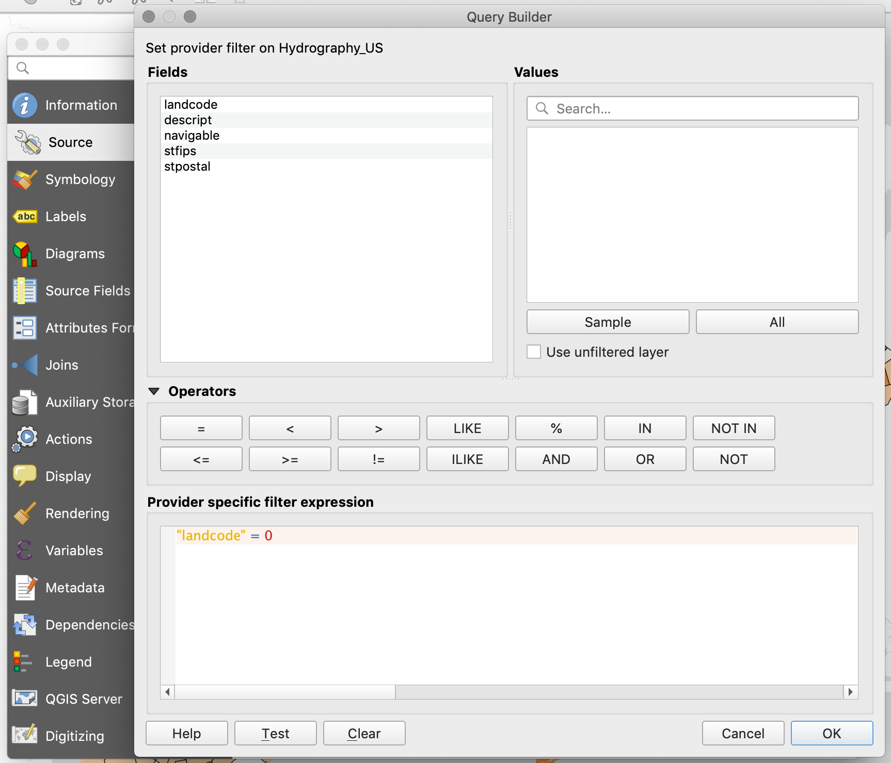
Now you can finish the styling of the map and in the Print Composer (Layout) add all the necessary elements: legend, scale bar, title, and sources.
Your final map should look something like this:
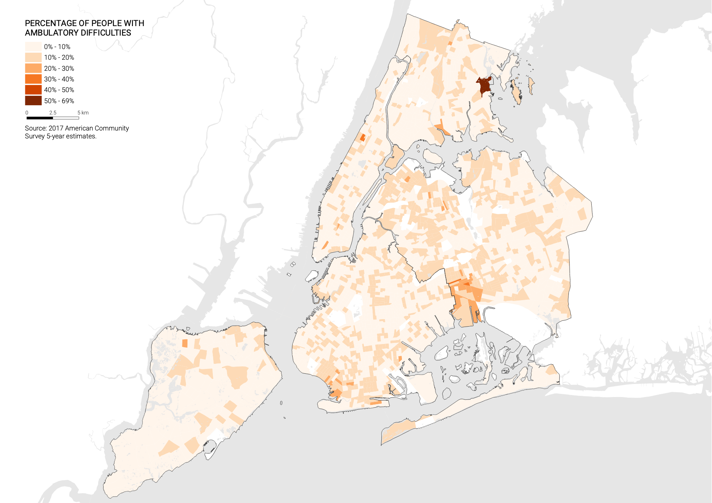
Now you can go ahead and produce the other two maps: Percentage of the population less than 5 years old, and Percentage of the population less than 5 years old or with ambulatory difficulties.